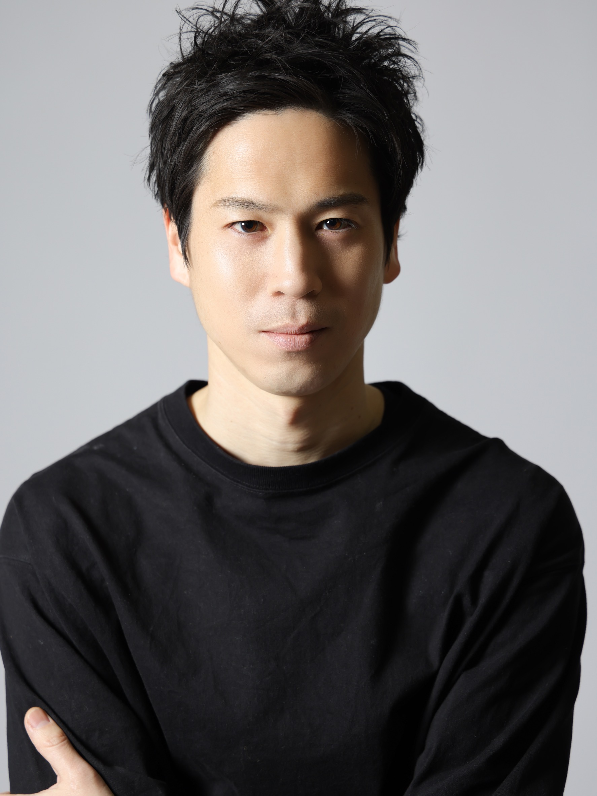

優しさを連鎖させ
人と社会を未来につなげる
About
大谷 尚 Hisashi Otani
弁護士／株式会社フクイト取締役

Career / 略歴
- 平成元年福井県坂井市（旧坂井郡丸岡町）に生まれる
- 平成２０年福井県立藤島高校卒業
- 平成２４年神戸大学卒業
- 平成２６年同法科大学院卒業
司法試験合格 - 平成２７年～裁判所職員として約10年間勤務
- 令和７年弁護士事務所に転職
- 令和７年株式会社フクイトに参画
- 令和８年弁護士資格取得
Contact
講演・取材・プロジェクトのご依頼、
AIガバナンスへの取り組みに関するご相談など、
「少し話を聞いてみたい」「一緒に対話してみたい」という方は、
ぜひ以下のフォームよりお気軽にご連絡ください。